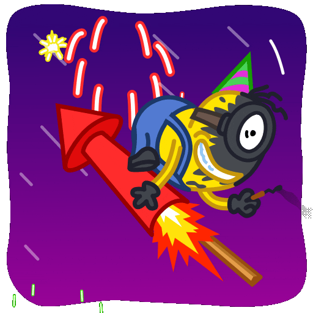

<section class="info__section navigation" id="about">
    <div class="container">
        <div class="info__section-wrapper">
            <div class="info__content">
                <h2 class="info__title">
                    <span>What are</span> Minion Crypto Fields?
                </h2>
                
                <p class="info__text">
                    <span>Minion Crypto Fields</span> — is a unique farming game where players can use NFTs to mine minion tokens. These tokens can be sold or exchanged for any cryptocurrency in the TON system, opening up new opportunities for game participants.
                </p>
            </div>
        </div>
    </div>
</section>